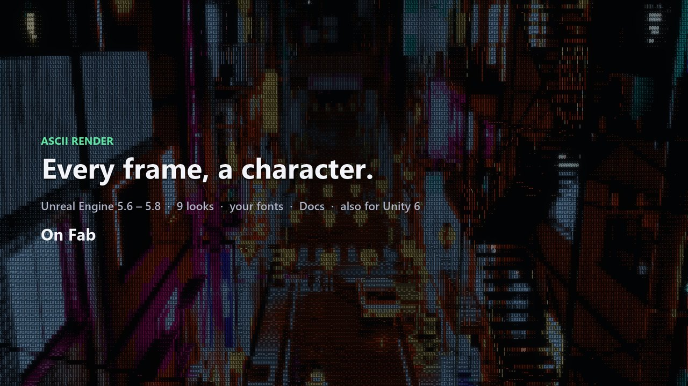

ASCII Render
Turn any Unreal scene into art-directed ASCII: nine looks from ink hatching to terminal text, symbols sized by depth, hatching that follows surfaces, contours and code rain. One volume, no setup.

Quick start (Unreal Engine)
ASCII Render turns any Unreal Engine 5 scene into art-directed text-mode rendering. It is a screen-space effect that reads the scene's depth and surface normals, so symbols shrink with distance, hatching follows the forms, contours become stroke symbols and distance fades into haze. No material changes, works with any content.
1. Enable
- Copy
AsciiRenderinto your project'sPluginsfolder (or enable it from the engine plugins list). - Restart the editor. Windows 64-bit, Unreal Engine 5.6, 5.7 or 5.8.
1b. Try the demo map
Content Browser → Settings → Show Plugin Content → AsciiRender Content/Demo/NeonAlley/Maps/L_NeonAlley_Night → Play.
A night neon alley (our own content, ~80 MB, Nanite) with a courier robot, ten cameras and one ASCII Render Volume.
| Key | Action |
|---|---|
| 1–9 | Presets: Ink Hatch, Engraving, Terminal, Bold Hatch, Keycap Mosaic, Code Figure, Code Storm, Schematic, Noir |
| 0 | Effect on / off |
| Left / Right | Previous / next camera |
| F | Camera fly-through |
| M | Object mask: robot keeps its look → ASCII only on the robot → signs keep their look → off |
| V | Reveal wave growing out of the robot |
| R | Robot drives along the street |
| H | Help |
For the mask demo set Project Settings → Rendering → Postprocessing → Custom Depth-Stencil Pass to Enabled with Stencil
(the robot is stencil 1, the car 2, signs and neon 3). The scene is lit with Lumen; hardware ray tracing makes it look best
but the effect itself does not need it. The demo actors live in the small AsciiRenderShowcase module.
2. Add the effect
- Place Actors panel → search ASCII Render Volume → drag it into the level.
- It is Unbound by default: the whole level gets the effect. Untick Unbound and scale the volume to limit it to an area (the highest Priority volume around the camera wins).
3. Pick a look
In Details → ASCII Render → Preset choose a starting point:
| Preset | Look |
|---|---|
| Ink Hatch | Painted picture, letters hatch the shadows (default) |
| Bold Hatch | Stronger hatching and contour symbols, comic ink |
| Engraving | Ordered strokes that follow the forms, cross-hatching in the dark |
| Keycap Mosaic | Picture as a mosaic of keycap tiles with contours |
| Code Figure | Fine bright symbols on dim tiles, the dark falls away |
| Code Storm | Full symbol field, big symbols near and small far |
| Schematic | Blueprint drawing: navy / pale cyan, stroke-symbol contours |
| Noir | Black and white, heavy form hatching, haze |
| Terminal | Pure text on black with a neon palette and glow |
Picking a preset fills every setting below. Everything stays editable; Reset To Preset brings the preset back, Custom (Keep Settings) means "no preset".
4. Tune
The Main section holds the sliders that change the look most: Symbol Size, Size By Depth, Hatching Follows Form,
Shadow Letters, Light Letters, Picture, Mosaic, Shadows To Black, Code Rain, Contour Symbols, Glints, Symbol Variety,
Contours, Glow, Effect Strength. The other sections hold the details. See Reference.md for every setting.
Flicker and code rain move in the editor when the viewport is Realtime.
5. Per camera, per object, gameplay
- ASCII Render Camera component on a pawn or camera actor: its own look (Override), the volumes (Inherit) or no effect (Disabled).
- Objects → Apply To: only marked objects, or everything except them. Mark an object: Rendering → Render CustomDepth Pass on, Custom Depth Stencil Value set (and Marked Stencil Value to match, 0 = any). Needs Project Settings → Rendering → Postprocessing → Custom Depth-Stencil Pass = Enabled with Stencil; without it masks and object outlines are skipped (the Output Log says so).
- Reveal: ASCII only inside a sphere with a glowing symbol band at its edge (or only outside, Invert). From Blueprint:
Set Reveal Sphere (Center, Radius, Invert)and animate the radius for a scan wave;Disable Reveal Sphere. - Any setting from Blueprint:
Set Setting Number ("Haze", 0.5),Set Setting From Text ("HazeColor", "(R=1,G=0.5,B=0,A=1)"),Set Built In Look (Noir). - Look assets (Content Browser → Miscellaneous → Data Asset → AsciiRenderLook): share one look between levels; set it in Look Asset (Overrides Settings).
Console
r.AsciiRender.Enable 0/1— master switch.r.AsciiRender.ForceLook N— preset on every view (−1 off; 0 Ink Hatch, 1 Engraving, 2 Terminal, 3 Bold Hatch, 4 Keycap Mosaic, 5 Code Figure, 6 Code Storm, 7 Schematic, 8 Noir).r.AsciiRender.Set "DepthScale=1;Haze=0.5"— override settings live (property names fromReference.md; write|for,inside values).
Performance
One full-screen pass set per view at output resolution plus small per-cell passes (three cell grids with Size By Depth). Typical cost on an RTX 4090 at 1080p is well under a millisecond; scene captures, reflections and planar reflections are skipped.
Quick start (Unity)
ASCII Render turns a URP scene into ASCII art that reads like a drawing, not like a filter:
- Tone comes from the light, with local contrast and automatic levels.
- Contours are drawn with directional stroke symbols.
- Walls, floors and ceilings get their own symbol families.
- Hatching follows the forms, and symbols are bigger near the camera.
- Distance fades into haze, and symbols stick to the world instead of swimming.
It is the same renderer as the Unreal version, ported pass by pass.
Requirements: Unity 6 (6000.0 or newer), the Universal Render Pipeline (URP 17), and a graphics API with compute shaders (DirectX 11/12, Vulkan or Metal).
1. First look (1 minute)
- Open Window > Package Manager > + > Add package from disk and pick
com.alicemedia.asciirender/package.json. - Use GameObject > ASCII Render > ASCII Render Volume.
- Press Play, or just look at the Scene and Game views: the volume is unbound, so it applies everywhere.
No renderer asset changes are needed: the volume adds its pass to every URP camera by itself.
2. Looks
Pick a Preset on the volume. It fills every setting; the settings stay editable, and Reset To Preset (in the component's context menu) restores them.
| Preset | Look |
|---|---|
| Ink Hatch | A painted picture with letters hatching the shadows (default). |
| Bold Hatch | Letters reach the mid-tones; bright strokes accent the highlights. |
| Engraving | Ordered strokes: walls / then X, floors - then =. |
| Schematic | A blueprint drawing: navy and pale cyan duotone, contours drawn with strokes. |
| Noir | Black and white, heavy form hatching, distance into haze. |
| Keycap Mosaic | Mosaic tiles with small symbols; shadows fall out to black, code rain behind. |
| Code Figure | Surfaces built from bright symbols; everything dark or far is black with code columns. |
| Code Storm | A field of flickering symbols with rain over everything. |
| Terminal | Full text mode on black, with a neon palette and glow. |
Ascii Amount (Main) is one knob for the amount of ASCII in the layered looks; 0.5 is the look as authored.
3. Where it applies
- Volumes:
- Untick Unbound to limit a volume to its box (Size, around the object).
- The highest Priority volume that contains the camera wins.
- Per camera: add ASCII Render Camera to a camera (GameObject > ASCII Render > Add ASCII Render Camera To Selected Camera). It has three modes:
- Override: its own look;
- Inherit: the volumes decide;
- Disabled: never for this camera.
- Cameras that render into a render texture are skipped, like scene captures in Unreal, unless they have an ASCII Render Camera in Override mode or
AsciiRenderSystem.ApplyToRenderTextureCamerasis on.
Runtime API:
AsciiRenderSystem.Enabledis the master switch.AsciiRenderSystem.ForceLookforces one look on every camera.AsciiRenderSystem.AmountOverrideoverrides the amount on every camera.volume.ApplyPreset(...)switches a volume's look.volume.Settingsgives every setting; changes apply in the next frame.
4. Objects and effects
- Marked objects: put objects on a layer and select it in Objects > Marked Layers. Object Outlines draws their outlines. Object Mask turns only them into ASCII, or everything except them.
- Reveal: a sphere (Reveal Center, Reveal Radius). Outside it the rendered picture shows, with a band of glowing symbols at the edge (Reveal Edge, Reveal Invert). Animate it for transitions.
- Tone From Lighting: divides the picture by the material colour, so dark textures stop reading as shadow. It needs URP's Deferred rendering path; in Forward it has no effect.
- Fonts: Symbols > Font takes an ASCII Render Font asset (Assets > Create > ASCII Render > Font Atlas): an atlas texture, its characters, its columns and the glyph aspect. Empty uses the built-in JetBrains Mono atlas (SIL Open Font License, in
Licenses/).
5. Performance
All passes are compute shaders in the URP render graph:
- geometry and contours at the camera resolution;
- the cell passes on the small cell grids (three nested grids with Depth Scale);
- a composite, an optional glow and one blit.
Units are meters, so Fog Distance, Haze Start / End, Depth Scale Near / Far and the reveal radius are in meters.
Reference
Every setting lives on the ASCII Render Volume (Details → sections below), on the ASCII Render Camera component and in Look assets. Picking a Preset fills all of them; everything stays editable.
Names in code are the property names for Blueprint Set Setting Number / Set Setting From Text and the console command r.AsciiRender.Set "Name=Value;Name=Value".
Main
| Setting | Property | Description |
|---|---|---|
| Mode | Finish |
Layered: the picture with letter layers (every look except Terminal). Terminal: pure text on a dark background with palette and glow. |
| Symbol Size | CellHeight |
Cell height in pixels at 1080p (scales with resolution). Smaller = more, finer symbols. |
| Shadow Letters | InkStrength |
Dark letters that hatch the shadows (0 = none). |
| Light Letters | LightLetters |
Bright letters on lit surfaces (0 = none, 1 = full symbol field). |
| Picture | PictureBrightness |
Brightness of the picture under the letters (0 = letters on black, like printed ASCII art). |
| Mosaic | TileAmount |
0 = painted picture, 1 = every cell one flat tile of its colour. |
| Shadows To Black | BlackCut |
Cells darker than this drop out to the background: shadows and silhouettes made of absence. |
| Code Rain | RainAmount |
Share of columns with falling code in the black areas (0 = off). |
| Size By Depth | DepthScale |
0 = one symbol size everywhere; 1 = big symbols near the camera, small ones far away (the grid splits with distance). |
| Hatching Follows Form | FormHatching |
Shadow strokes ('/ | \ -') run along the surfaces instead of one ramp everywhere: hatching wraps the forms like an engraving. |
| Contour Symbols | ContourSymbols |
Silhouettes and creases drawn with stroke symbols ('/ | \ _ -') instead of only lines. |
| Glints | LightSymbols |
The strongest light peaks (lamps, hot highlights) become sparse bright '*' / '+' sparkles. |
| Symbol Variety | SymbolVariety |
0 = the symbol strictly follows the tone (clean gradients), 1 = any symbol of the set (code texture). |
| Contours | LineStrength |
Contour lines on silhouettes, creases and outlined objects. |
| Glow | Glow |
Glow around bright symbols. |
| Effect Strength | Opacity |
Blend with the original image (0 = original, 1 = full effect). |
Depth And Form
| Setting | Property | Description |
|---|---|---|
| Symbols Stick To World | bWorldAnchored |
Random symbol choice is seeded by the world position under the cell, so symbols hold on to surfaces instead of boiling when the camera moves. |
| Big Symbols Until | DepthScaleNear |
Size By Depth: up to this distance symbols are at their biggest. |
| Small Symbols From | DepthScaleFar |
Size By Depth: from this distance symbols are at their smallest. |
| Size Border Jitter | DepthScaleJitter |
Breaks the borders between symbol sizes into a ragged mix (0 = clean rings). |
| Cross-Hatch From | CrossHatchFrom |
Hatching Follows Form: shadow density where strokes cross into X (1 = never). |
| Depth Haze | Haze |
Aerial perspective: distance loses contrast, colour and symbols into the haze colour. |
| Haze Colour | HazeColor |
|
| Haze Start | HazeStart |
|
| Haze Full | HazeEnd |
Objects
| Setting | Property | Description |
|---|---|---|
| Apply To | ObjectMask |
Limit the effect to marked objects or keep marked objects untouched. Mark an object: Render CustomDepth Pass on, Custom Depth Stencil Value set. |
| Marked Stencil Value | MarkedStencilValue |
Stencil value that marks objects (0 = any non-zero value). |
Reveal
| Setting | Property | Description |
|---|---|---|
| Use Reveal Sphere | bReveal |
Only the inside of a sphere is ASCII (or only the outside when inverted); a glowing band of symbols runs along its edge. Drive Centre / Radius from Blueprint for scans and transitions. |
| Centre | RevealCenter |
World position of the sphere centre. |
| Radius | RevealRadius |
|
| Edge Width | RevealEdge |
Width of the glowing symbol band at the edge. |
| Edge Colour | RevealEdgeColor |
|
| Invert | bRevealInvert |
ASCII outside the sphere, the rendered picture inside. |
Symbols
| Setting | Property | Description |
|---|---|---|
| Symbol Set | SymbolSet |
Characters for light letters and code rain (and shadow letters when enabled below). Any order: they are sorted by ink coverage. |
| Flicker | SymbolFlicker |
How often symbols change, per second (0 = still). Needs Realtime in the editor viewport. |
| Symbol Scale In Cell | SymbolScale |
Symbol size inside its cell (small symbols inside tiles read like keycaps). |
| Shadow Letters Use Symbol Set | bInkUsesSymbolSet |
Shadow letters take the symbol set instead of the hatching ramps below. |
| Hatching On Walls | WallRamp |
Shadow letters on walls and other vertical surfaces, light to dense (first character = empty). |
| Hatching On Floors | FloorRamp |
Shadow letters on floors and up-facing surfaces, light to dense. |
| Hatching On Ceilings | CeilingRamp |
Shadow letters on ceilings and down-facing surfaces, light to dense. |
| Dither | Dither |
Ordered dithering between neighbouring hatching steps (0 = hard steps). |
| Font | Font |
Glyph atlas. Empty = the built-in JetBrains Mono. (advanced) |
| Light Source Symbol | LightGlyph |
Terminal mode: symbol drawn on light sources. (advanced) |
Shadow Letters
| Setting | Property | Description |
|---|---|---|
| Reach Into Mid-Tones | FillFrom |
Lower = letters reach further from the shadows into the mid-tones; higher = only the deepest shadows. |
| Letter Darkness | InkDarkness |
Letter colour = surface colour times this (0 = black letters). |
| Stipple Lightest Step | bStipple |
The lightest hatching step only in every other cell. |
| Density From Darkness | bInvertDensity |
Letter density follows darkness (ink looks) instead of light (terminal looks). (advanced) |
Light Letters
| Setting | Property | Description |
|---|---|---|
| Start From Brightness | LightLettersFrom |
0 = bright letters on every surface, 0.8 = only on highlights. |
| Letter Brightness | LightLetterBrightness |
Bright letter colour = surface colour times this (above 1 they glow when Glow is on). |
| Highlights To White | LightLetterWhiteness |
Bright letters on the brightest surfaces turn towards white. |
Light Sources
| Setting | Property | Description |
|---|---|---|
| Light Detect Start | LightPeakStart |
How far a cell must outshine its surroundings (log2) to start being a light source. |
| Light Detect Full | LightPeakFull |
|
| Light Halo | Halo |
Symbol halo around lights. |
| Light Halo Radius | HaloRadius |
Picture
| Setting | Property | Description |
|---|---|---|
| Saturation | SceneSaturation |
Colour saturation of the picture and the symbols. |
| Paint Bands | PaintBands |
Number of value bands of the painted picture. |
| Paint Banding | PaintBanding |
0 = original shading, 1 = flat painted bands. |
| Paint Smoothing | PaintSmoothing |
Smoothing before banding, pixels at 1080p (cleaner bands on noisy textures). |
| Tile Gap Darkness | TileGap |
Darkness of the gap between cells (keycap / LED look). |
| Tile Gap Width | TileGapWidth |
Gap width in pixels at 1080p. |
| Tile Bevel | TileBevel |
Lit top edge / dark bottom edge of every tile. |
Color
| Setting | Property | Description |
|---|---|---|
| Duotone | Duotone |
Recolours the picture between a shadow colour and a light colour. |
| Shadow Colour | ShadowTint |
|
| Light Colour | LightTint |
|
| Posterize Steps | PosterizeSteps |
Limits every colour channel to this many steps (0 = off). |
| Vignette | Vignette |
Darkens the frame towards its edges. |
Black And Distance
| Setting | Property | Description |
|---|---|---|
| Ragged Edge | BlackFringe |
Ragged, dithered border of the black. |
| Distance To Black | DistanceFade |
Distant cells darken towards the black. |
| Fade Distance | FogDistance |
Distance where the fade (and the terminal fog) is complete. |
| Black Sky | bBlackSky |
The sky drops out to the background too. |
| Background Colour | Background |
Colour of the black areas. |
| Sky Distance | SkyDistance |
Pixels farther than this count as sky. (advanced) |
Code Rain
| Setting | Property | Description |
|---|---|---|
| Over The Picture | RainOverPicture |
Code rain also falls over the picture with this strength. |
| Colour | RainColor |
|
| Brightness | RainBrightness |
|
| Speed | RainSpeed |
Cells per second. Needs Realtime in the editor viewport. |
| Trail Length | RainLength |
Trail length in cells. |
Contours
| Setting | Property | Description |
|---|---|---|
| Line Colour | LineColor |
|
| Silhouette Sensitivity | SilhouetteThreshold |
Relative depth jump between neighbour pixels that draws a silhouette (lower = more lines). |
| Crease Angle | CreaseAngle |
Angle between surfaces that draws a crease line. |
| Crease Lines | CreaseWeight |
Strength of crease lines. |
| Crease Max Distance | CreaseMaxDistance |
Creases farther than this are ignored (they turn into noise). |
| Outline Stencil Objects | bObjectOutlines |
Outline objects that render Custom Depth with a stencil value. |
| Stroke Cell Fraction | EdgeCellFraction |
Terminal mode: fraction of a cell's pixels that must be edges to draw a stroke symbol. (advanced) |
| Stroke Agreement | EdgeAgreement |
Terminal mode: share of edge pixels that must agree on one direction. (advanced) |
Tone
| Setting | Property | Description |
|---|---|---|
| Local Contrast | LocalContrast |
Separates forms of similar brightness. |
| Equalize | Equalize |
Spreads cells over every symbol step on dark and bright scenes alike (0 = linear levels). |
| Gamma | Gamma |
Above 1 darkens the mid-tones, below 1 brightens them. |
| Glow Radius | GlowRadius |
Pixels at 1080p. |
| Local Contrast Radius | LocalContrastRadius |
In cells. (advanced) |
| Levels Dark % | LevelsLowPercent |
Dark percentile of the frame mapped to 0. (advanced) |
| Levels Bright % | LevelsHighPercent |
Bright percentile of the frame mapped to 1. (advanced) |
Terminal
| Setting | Property | Description |
|---|---|---|
| Colour Mode | ColorMode |
Palette: nearest palette hue; Scene: the scene colour; Mono: one colour. |
| Palette | Palette |
|
| Neutral / Mono Colour | NeutralColor |
Colour of grey cells in palette mode and the mono colour. |
| Palette Saturation Threshold | SaturationThreshold |
|
| Brightness Floor | BrightnessFloor |
Symbol brightness at the darkest filled cell. |
| Stroke Brightness | EdgeBrightness |
|
| Cell Background Tint | CellBackgroundTint |
|
| Sky Dots | SkyDots |
Sparse dim dots in the sky. |
Changelog
1.0.0 (first release, Unreal Engine 5.6, 5.7 and 5.8)
- Layered ASCII rendering: painted picture or tile mosaic, dark shadow letters, bright light letters, shadows to black, code rain.
- Space and form: symbol size by depth (three nested grids), hatching that follows surface orientation with cross-hatching, depth haze, symbols anchored to the world (no boiling when the camera moves).
- Contours as stroke symbols, glints on light peaks, duotone, posterize, vignette.
- Object mask by Custom Depth Stencil (only marked / everything except marked).
- Reveal sphere with a glowing symbol edge, Blueprint-driven.
- Terminal mode: pure text with palette, light halos and glow.
- Nine presets; presets fill editable settings; Reset To Preset; settings laid out in sections in the Details panel.
- Blueprint: Set Built In Look, Set Setting Number, Set Setting From Text, Set Reveal Sphere, Disable Reveal Sphere.
- Console: r.AsciiRender.Enable, r.AsciiRender.ForceLook, r.AsciiRender.Set.
- Demo map: night neon alley with a courier robot, ten cameras, fly-through; keys 1–9 presets, M object mask, V reveal wave.
- Presets tuned so shapes stay readable on close-ups (finer symbols, gentler size by depth, strokes only on clear edges).
- Glow is taken from symbols only, so the rendered picture outside a reveal sphere or under a mask keeps its exposure.
Third-party content
| Item | Where | License |
|---|---|---|
| JetBrains Mono (font, rasterised into the built-in glyph atlas) | Plugins/AsciiRender/Resources/Atlas/JetBrainsMono.png |
SIL Open Font License 1.1, full text in Plugins/AsciiRender/Resources/Licenses/JetBrainsMono_OFL.txt |
| M PLUS 1 Code (font, rendered into the sign textures of the demo map) | Plugins/AsciiRender/Content/Demo/NeonAlley/Textures | SIL Open Font License 1.1, full text in Plugins/AsciiRender/Resources/Licenses/MPLUS1Code_OFL.txt |
Everything else (code, shaders, icon, presets, the demo map: meshes made procedurally in Blender, procedural textures and materials) is original work by Alice Media. No AI-generated content is included.
Support
Questions, bugs and ideas: https://github.com/alicemedia-cmyk/alice-media-docs/issues. Please include your engine version and the ASCII Render version (1.0.0).